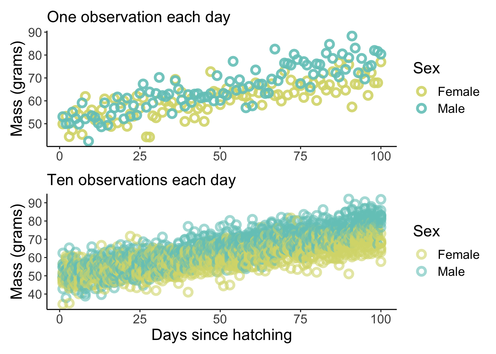
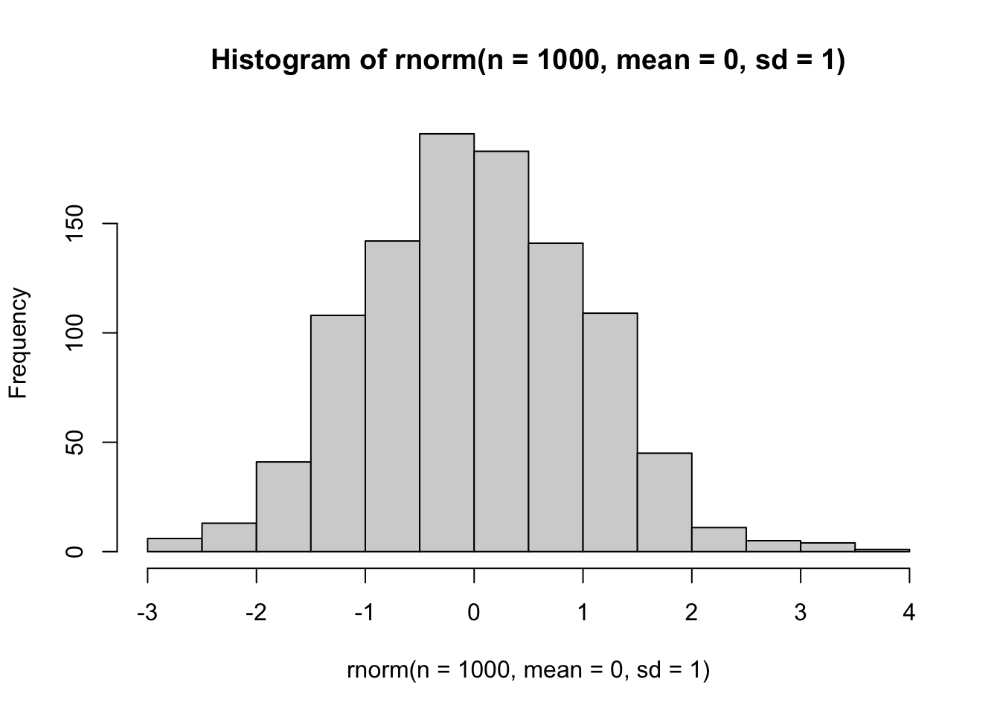
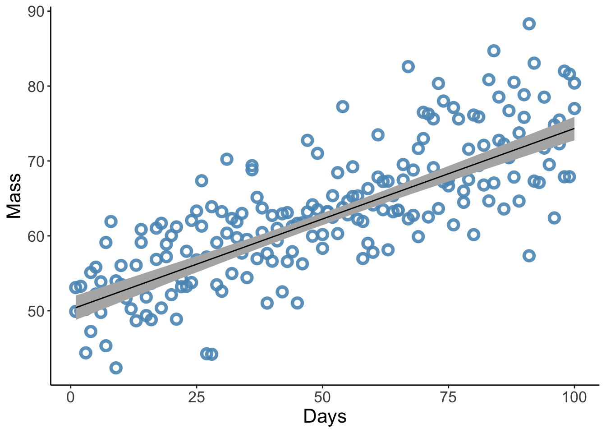
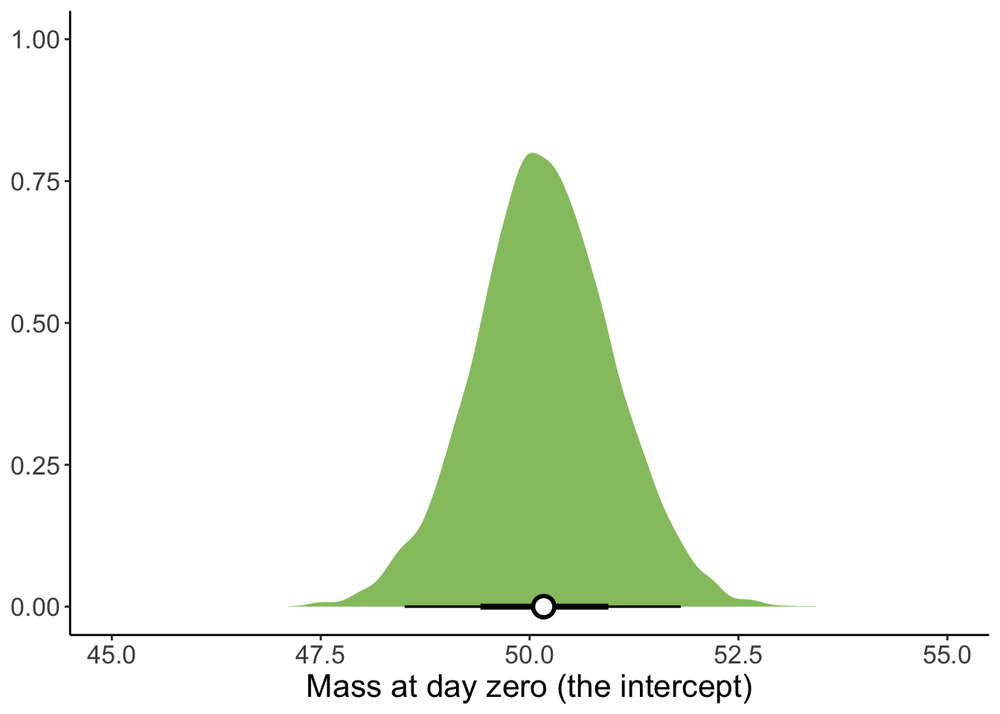
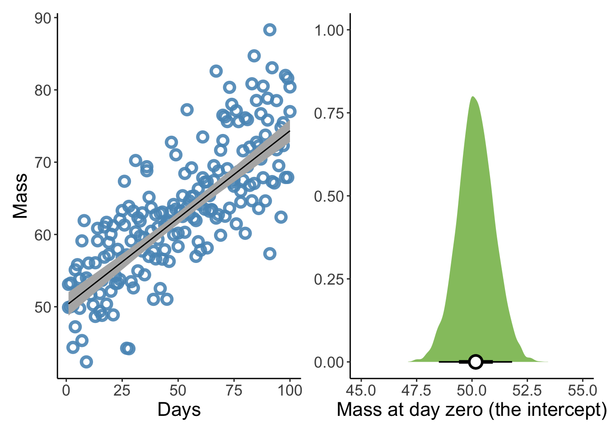

Code
library(tidyverse) # for tidy style coding
library(brms) # for bayesian models
library(tidybayes) # for many helpful functions used to visualise distributions
library(MetBrewer) # for pretty colours
library(patchwork) # for combining plotslibrary(tidyverse) # for tidy style coding
library(brms) # for bayesian models
library(tidybayes) # for many helpful functions used to visualise distributions
library(MetBrewer) # for pretty colours
library(patchwork) # for combining plotssim_growth_data_small <-
expand_grid(
Days = rep.int(1:100, 1),
Sex = c("Female", "Male")) %>%
arrange(Sex) %>%
mutate(Mass = if_else(Sex == "Female",
Days * 0.2 + rnorm(100, 50, 5),
Days * 0.3 + rnorm(100, 50, 5)))
sim_growth_data_large <-
expand_grid(
Days = rep.int(1:100, 10),
Sex = c("Female", "Male")) %>%
arrange(Days) %>%
mutate(Mass = if_else(Sex == "Female",
Days * 0.2 + rnorm(1000, 50, 5),
Days * 0.3 + rnorm(1000, 50, 5)))Plot them
p1 <-
sim_growth_data_small %>%
ggplot(aes(x = Days)) +
geom_point(aes(y = Mass, colour = Sex), shape = 1.5, stroke =2, size = 2.5, alpha = 0.9) +
scale_colour_manual(values = c(met.brewer(name = "Hokusai3")[1], met.brewer(name = "Hokusai3")[3])) +
labs(x = NULL, y = "Mass (grams)", subtitle = "One observation each day") +
theme_classic() +
theme(panel.grid = element_blank(),
text = element_text(size = 16))
p2 <-
sim_growth_data_large %>%
ggplot(aes(x = Days)) +
geom_point(aes(y = Mass, colour = Sex), shape = 1.5, stroke =2, size = 2.5, alpha = 0.6) +
scale_colour_manual(values = c(met.brewer(name = "Hokusai3")[1], met.brewer(name = "Hokusai3")[3])) +
labs(x = "Days since hatching", y = "Mass (grams)", subtitle = "Ten observations each day") +
theme_classic() +
theme(panel.grid = element_blank(),
text = element_text(size = 16))
p1 / p2
The core inputs to make the model run are formula, family and data.
You can code them like this:
brm(Mass ~ 1 + Days, family = gaussian, data = sim_growth_data_small)
Next are your priors
The get_prior function is very useful here. Let’s try it out:
get_prior(Mass ~ 1 + Days, family = gaussian, data = sim_growth_data_small) prior class coef group resp dpar nlpar lb ub
(flat) b
(flat) b Days
student_t(3, 62.9, 10.4) Intercept
student_t(3, 0, 10.4) sigma 0
source
default
(vectorized)
default
defaultThis shows the brms defaults for all the priors that are neccessary to run this model. If you don’t supply your own prior, brms will use its defaults.
So we need priors for b, Intercept and sigma
What do thes mean?
b is the effect that Days has on Mass. We know that things generally get bigger after hatching, so this must be positive.
Intercept is the value for mass when Days = 0. This also must be positive.
sigma is the variation in mass. This also must be > 0.
To check out what a prior looks like I use this quick bit of code
hist(rnorm(n = 1000, mean = 0, sd = 1))
Now some modelling nitty gritty
We need to tell brms how many iterations to run the model for, how many of these iterations we wish to use as warmup, how many chains to run and how many of your computers cores you want to use.
Finally, because these models can be slow (this one will be fast but it’s good practice), you can use the file option to save the model output in your working directory and automatically load it whenever you rerun the code.
Here is the full model:
Our_mass_model_small <-
brm(Mass ~ 1 + Days,
family = gaussian,
data = sim_growth_data_small,
prior = c(prior(normal(50, 10), class = Intercept),
prior(lognormal(-1, 1), class = b, lb = 0),
prior(exponential(1), class = sigma)),
iter = 4000, warmup = 2000, chains = 4, cores = 4, seed = 1,
file = "fits/Our_mass_model_small_2")You can view the model output easily
Our_mass_model_small Family: gaussian
Links: mu = identity; sigma = identity
Formula: Mass ~ 1 + Days
Data: sim_growth_data_small (Number of observations: 200)
Draws: 4 chains, each with iter = 4000; warmup = 2000; thin = 1;
total post-warmup draws = 8000
Population-Level Effects:
Estimate Est.Error l-95% CI u-95% CI Rhat Bulk_ESS Tail_ESS
Intercept 50.17 0.82 48.50 51.81 1.00 7722 5774
Days 0.24 0.01 0.21 0.27 1.00 7771 5542
Family Specific Parameters:
Estimate Est.Error l-95% CI u-95% CI Rhat Bulk_ESS Tail_ESS
sigma 5.75 0.28 5.23 6.34 1.00 7593 5623
Draws were sampled using sampling(NUTS). For each parameter, Bulk_ESS
and Tail_ESS are effective sample size measures, and Rhat is the potential
scale reduction factor on split chains (at convergence, Rhat = 1).Re-run on the bigger dataset
Our_mass_model_large <-
brm(Mass ~ Days,
family = gaussian,
data = sim_growth_data_large,
prior = c(prior(normal(50, 10), class = Intercept),
prior(lognormal(-1, 1), class = b, lb = 0),
prior(exponential(1), class = sigma)),
iter = 4000, warmup = 2000, chains = 4, cores = 4,
file = "fits/Our_mass_model_large")And view output
Our_mass_model_large Family: gaussian
Links: mu = identity; sigma = identity
Formula: Mass ~ Days
Data: sim_growth_data_large (Number of observations: 2000)
Draws: 4 chains, each with iter = 4000; warmup = 2000; thin = 1;
total post-warmup draws = 8000
Population-Level Effects:
Estimate Est.Error l-95% CI u-95% CI Rhat Bulk_ESS Tail_ESS
Intercept 49.80 0.27 49.28 50.33 1.00 8877 6133
Days 0.25 0.00 0.24 0.26 1.00 9296 5883
Family Specific Parameters:
Estimate Est.Error l-95% CI u-95% CI Rhat Bulk_ESS Tail_ESS
sigma 5.97 0.10 5.79 6.16 1.00 8499 5963
Draws were sampled using sampling(NUTS). For each parameter, Bulk_ESS
and Tail_ESS are effective sample size measures, and Rhat is the potential
scale reduction factor on split chains (at convergence, Rhat = 1).Now we want to plot the model predictions - that is, for a given Day, what is the predicted mass of an individual?
We can use two techniques, the easiest of which uses fitted
First we need to create a new dataset with the combinations we want to predict from the model
new_data <- sim_growth_data_small %>% distinct(Days)Now lets fit the model predictions
Model_predictions <-
fitted(Our_mass_model_small, newdata = new_data) %>%
bind_cols(new_data)Let’s plot these
p3 <-
ggplot(data = sim_growth_data_small,
aes(x = Days)) +
geom_point(aes(y = Mass),
color = met.brewer(name = "Hokusai3")[4], shape = 1.5, stroke =2, size = 2.5, alpha = 0.9) +
geom_smooth(data = Model_predictions,
aes(y = Estimate, ymin = Q2.5, ymax = Q97.5),
stat = "identity",
fill = "grey70", color = "black", alpha = 1, size = 1/2) +
labs(y = "Mass") +
theme_classic() +
#coord_cartesian(xlim = range(-4, 4),
# ylim = range(Kalahari_data$weight)) +
theme(text = element_text(size = 16),
panel.grid = element_blank())
p3
What if we wanted to plot the distribution of the intercept?
We could get the prediction from fitted when Days = 0 or we can use the as_draws_df function
Our_mass_model_small %>%
as_draws_df()# A draws_df: 2000 iterations, 4 chains, and 5 variables
b_Intercept b_Days sigma lprior lp__
1 51 0.22 6.0 -9.6 -645
2 52 0.22 5.9 -9.5 -645
3 52 0.21 5.4 -9.0 -647
4 48 0.28 6.1 -9.7 -647
5 51 0.24 5.8 -9.5 -645
6 50 0.24 5.2 -8.7 -645
7 50 0.25 6.1 -9.7 -644
8 51 0.23 5.6 -9.3 -645
9 51 0.23 5.5 -9.1 -645
10 49 0.24 6.0 -9.5 -646
# ... with 7990 more draws
# ... hidden reserved variables {'.chain', '.iteration', '.draw'}This gives us 2000 values for all the parameters estimated by the model - when plotted together these give us posterior distributions. Let’s do so for the Intercept.
p4 <-
Our_mass_model_small %>%
as_draws_df() %>%
ggplot(aes(x = b_Intercept)) +
stat_halfeye(fill = met.brewer("Hokusai3")[2], .width = c(0.66, 0.95), alpha = 1,
point_interval = "mean_qi", point_fill = "white",
shape = 21, point_size = 4, stroke = 1.5, scale = 0.8) +
labs(x= "Mass at day zero (the intercept)", y = NULL) +
theme_classic() +
coord_cartesian(xlim = c(45, 55)) +
theme(panel.background = element_rect(fill='transparent'), #transparent panel bg
plot.background = element_rect(fill='transparent', color=NA), #transparent plot bg
panel.grid.minor.x = element_blank(),
legend.position = "none", #transparent legend panel
text = element_text(size=16))
p4
Finally, we can combine the plot to make them look nice
p3 + p4